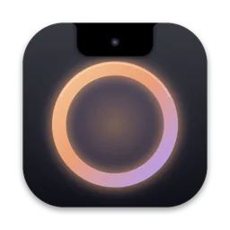
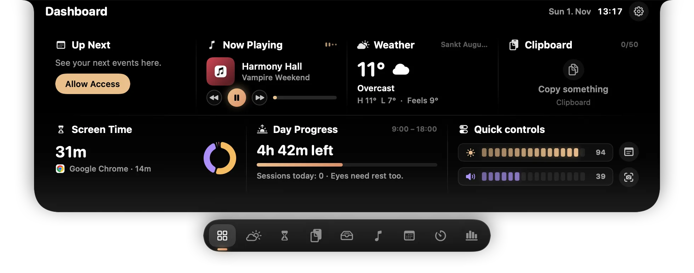
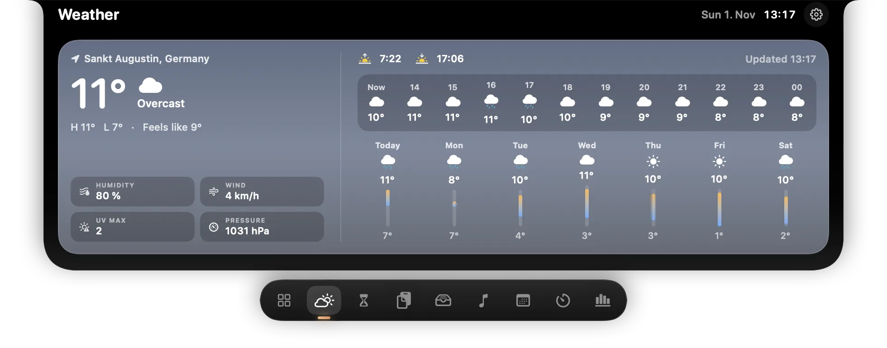
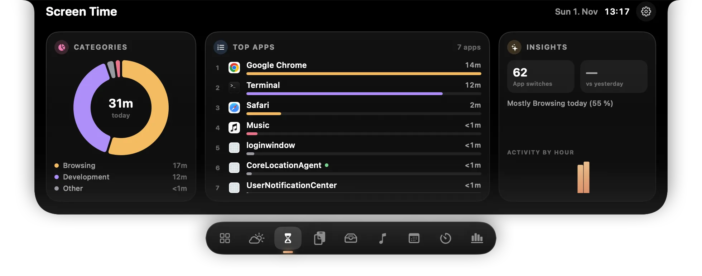
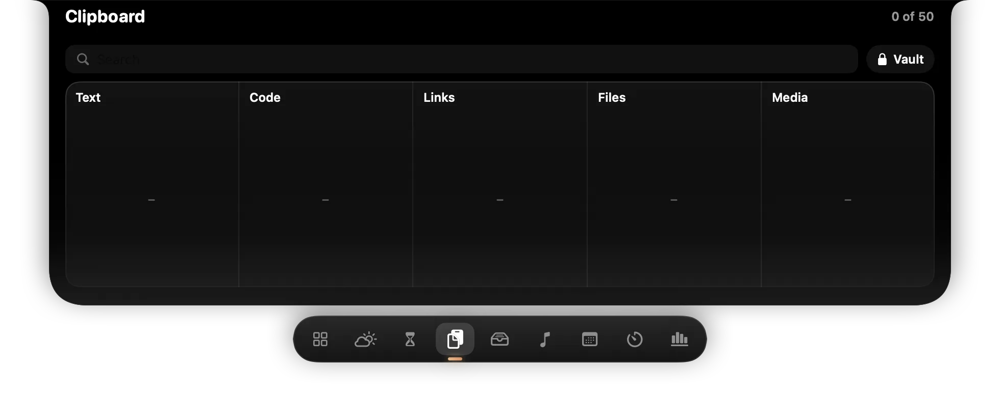
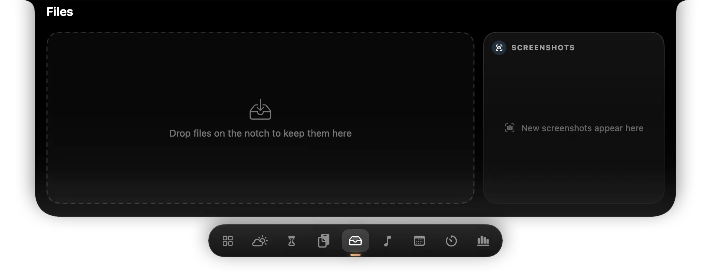
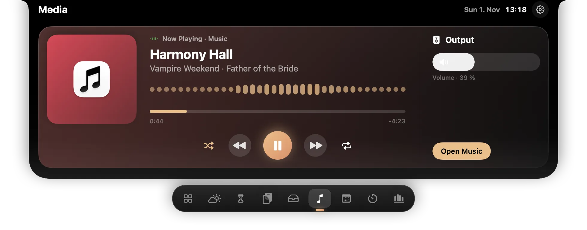
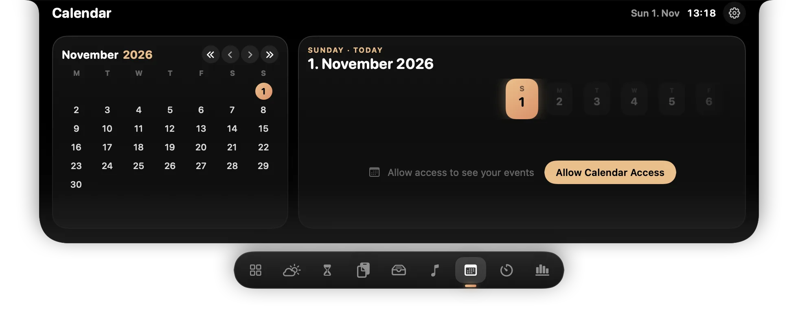
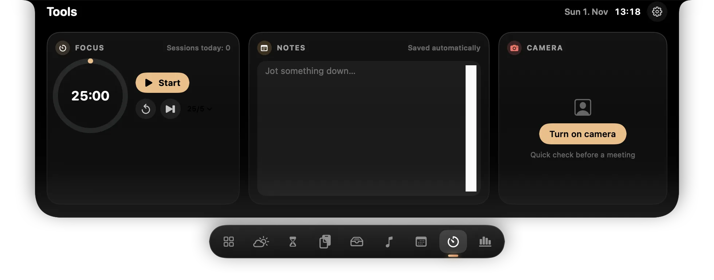

HaloNotch 1.1 · macOS 14+ · Windows preview · Free & open sourceYour MacBook notch, now a hub.
Hover over the notch and it opens into a panel: what's next, what's playing, weather, clipboard, screen time and files — one glance, no window switching. On Windows, a thin handle at the top centre of the screen does the same.

Features
Everything, one hover away
Ten tabs, plus a volume / brightness HUD and a clipboard shortcut (Mac ⌃⌥V, Windows Ctrl+Alt+V; keys 1–0 paste).
Dashboard
Up next, now playing, weather, clipboard, screen time, day progress and quick controls at a glance.
Clipboard & Vault
Last 50 copied items in columns — text, code, links, files, media, colours. Pin, search, and keep secrets in a PIN-protected Vault.
Weather
Current weather, 12 hours and 7 days.
Screen Time
Time per app and category, app switches, activity by hour — stored only on your computer.
Files
Drag files onto the notch to park them, drag them out again. Latest screenshots too.
Media
Now playing with controls and a real equalizer (Mac: Spotify / Apple Music; Windows: any player).
Calendar
Month view and your events, with a Join button for Teams / Zoom / Meet.
Reminders
Your reminders listed — the notch opens when one is due.
Tools
Focus timer, quick notes, camera mirror.
Usage
Claude Code / Codex token usage from local logs (opt-in).
Screenshots
See it in the notch
Tap any screenshot to open the gallery.















Compare
HaloNotch vs other Dynamic Island apps for Mac
Notch apps bring a Dynamic Island-style panel to the MacBook. Here is how HaloNotch sits next to the best-known ones.
| Feature | HaloNotch | NotchNook | Boring Notch | DynamicLake |
|---|---|---|---|---|
| Price | Free | Paid | Free | Paid |
| Open source | Yes | No | Yes | No |
| macOS | Yes | Yes | Yes | Yes |
| Windows | Preview | No | No | No |
Other apps checked November 2026 from their public listings. Check each developer's site for current pricing.
PIN-protected Vault
Keep secrets in clipboard history, encrypted with your PIN.
Screen time
Time per app and category, stored only on your computer.
AI usage
Claude Code and Codex token usage from local logs, opt-in.
Hidden when sharing
The panel stays out of screen shares and recordings.
Download
Free, on GitHub
Builds are not signed with a paid certificate, so your OS warns on first launch. Steps below.
macOS
Version 1.1.0 · macOS 14+ · Apple silicon & Intel
- Unzip
HaloNotch-<version>.zipand moveHaloNotch.appto Applications. - Open it. macOS says it could not verify HaloNotch — click Done.
- System Settings → Privacy & Security → Open Anyway. Or in Terminal:
xattr -dr com.apple.quarantine /Applications/HaloNotch.app
Windows Preview
Version 0.2.0 · Windows 10/11 · x64 & ARM64
- Pick
-win-x64.zip(Intel/AMD) or-win-arm64.zipfrom the latestdesktop-v…pre-release. - Unzip and run
HaloNotch.exe— one file, no installer, no .NET needed. - If SmartScreen warns: More info → Run anyway. Then move the mouse to the top centre of the screen.
Stays on your computer
- Clipboard history lives in memory; copies marked concealed (password managers) are never stored.
- Vault secrets are encrypted with your PIN (PBKDF2-SHA256 + AES-GCM) and auto-lock after 5 minutes, on sleep and on screen lock.
- Weather sends only an approximate location (~1 km) or the city you type to Open-Meteo. Nothing else leaves the machine.
- The notch panel is hidden from screen sharing and recordings.
- Read the full HaloNotch privacy policy
Open source
Swift for macOS, C# / Avalonia for Windows. Build it yourself with ./build.sh — apps built on your own Mac skip the Gatekeeper warning. Based on Tenfold by Siva (MIT).